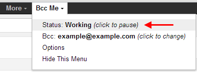

If you have any Gmail windows open right now, AlwaysBcc won't be fully enabled until you reload those Gmail windows.
The automatic Bcc functionality can be paused either by clicking on the bcc icon (which will appear for Gmail windows only) ...
... or by using the AlwaysBcc dropdown menu on the Gmail page
